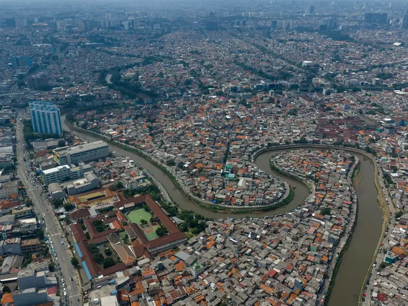

Jasa Sedot WC & Solusi Sanitasi di Jakarta Selatan
Melayani rumah tinggal, kos, kontrakan, ruko, kantor, dan tempat usaha di wilayah Jakarta Selatan.
Layanan Sanitasi yang Tersedia di Jakarta Selatan

NARAYA Sanitasi Solution melayani kebutuhan sedot WC dan solusi sanitasi untuk rumah tinggal, kos, kontrakan, ruko, kantor, tempat usaha, dan berbagai properti lainnya di wilayah Jakarta Selatan. Kondisi setiap lokasi dapat berbeda — ada pelanggan yang berada di kompleks perumahan dengan akses kendaraan yang mudah, sementara lokasi lainnya berada di kawasan permukiman padat, gang, atau jalan dengan akses terbatas. Karena itu, informasi alamat dan kondisi lokasi penting disampaikan sebelum pekerjaan dijadwalkan melalui WhatsApp.
Sedot WC Jakarta Selatan
Layanan penyedotan WC dapat dikonsultasikan ketika septic tank sudah penuh, sistem pembuangan mulai terganggu, atau Anda membutuhkan pengurasan septic tank secara berkala. Layanan ini dapat digunakan untuk rumah tinggal, kos, kontrakan, ruko, kantor, maupun tempat usaha di Jakarta Selatan.
Sedot Septic Tank
Septic tank yang penuh dapat menyebabkan sistem pembuangan tidak berjalan dengan baik. Penyedotan septic tank dilakukan dengan mempertimbangkan kondisi titik septic tank dan akses kendaraan menuju lokasi Anda.
WC Mampet
WC mampet dapat mengganggu aktivitas rumah maupun kegiatan usaha. Informasi mengenai kondisi WC, kapan mulai mampet, dan apakah air masih dapat mengalir akan membantu proses konfirmasi sebelum penanganan.
Septic Tank Penuh
Septic tank penuh dapat ditandai dengan saluran pembuangan yang mulai lambat, air sulit turun, bau tidak sedap, atau gangguan lain pada sistem pembuangan. Jika kondisi tersebut terjadi, Anda dapat menghubungi NARAYA dan menyampaikan kondisi lokasi untuk dikonsultasikan.
Penyedotan Limbah Cair Domestik
NARAYA juga melayani kebutuhan penyedotan limbah cair domestik sesuai jenis dan kondisi yang dapat ditangani. Sebelum pemesanan, sebaiknya jelaskan sumber limbah, lokasi, kondisi akses, serta kebutuhan penyedotan agar dapat dilakukan konfirmasi terlebih dahulu.
Area Pelayanan Jakarta Selatan
NARAYA melayani berbagai wilayah di Jakarta Selatan, antara lain:
- Cilandak
- Jagakarsa
- Kebayoran Baru
- Kebayoran Lama
- Mampang Prapatan
- Pancoran
- Pasar Minggu
- Pesanggrahan
- Setiabudi
- Tebet
Kebutuhan pelanggan di setiap wilayah dapat berbeda. Rumah di kawasan perumahan, kos di kawasan padat, ruko di area komersial, dan tempat usaha dapat memiliki kondisi septic tank serta akses yang berbeda. Karena itu, NARAYA tidak hanya melihat nama wilayah, tetapi juga mempertimbangkan kondisi lokasi ketika melakukan konfirmasi.
Sedot WC di Cilandak
Wilayah Cilandak memiliki kawasan permukiman dan area usaha dengan karakter lokasi yang beragam. Pelanggan yang membutuhkan sedot WC, sedot septic tank, atau penanganan WC bermasalah dapat menyampaikan alamat dan kondisi lokasi melalui WhatsApp.
Informasi mengenai akses kendaraan juga penting, terutama untuk lokasi yang berada di dalam gang atau area dengan ruang gerak kendaraan terbatas.
Sedot WC di Jagakarsa
Untuk wilayah Jagakarsa, pelanggan dapat menghubungi NARAYA untuk kebutuhan sedot WC, septic tank penuh, WC mampet, dan penyedotan limbah cair domestik yang sesuai dengan layanan.
Alamat lengkap dan patokan lokasi dapat dikirimkan terlebih dahulu agar proses konfirmasi lebih mudah.
Sedot WC di Kebayoran Baru dan Kebayoran Lama
Kebutuhan sanitasi di kawasan perkotaan dapat muncul pada rumah tinggal, apartemen, kos, ruko, kantor, maupun tempat usaha.
Untuk lokasi dengan akses yang berbeda-beda, pelanggan dapat memberikan informasi mengenai posisi septic tank dan akses kendaraan sebelum pekerjaan dilakukan.
Sedot WC di Mampang Prapatan, Pancoran, dan Pasar Minggu
Kawasan Mampang Prapatan, Pancoran, dan Pasar Minggu memiliki kombinasi kawasan hunian dan kegiatan usaha.
NARAYA dapat membantu mengonsultasikan kebutuhan penyedotan WC, septic tank, dan limbah cair domestik sesuai kondisi yang dapat ditangani.
Sedot WC di Pesanggrahan, Setiabudi, dan Tebet
Pelanggan di Pesanggrahan, Setiabudi, dan Tebet dapat mengirimkan informasi lokasi melalui WhatsApp untuk melakukan konfirmasi kebutuhan layanan.
Untuk lokasi yang berada di jalan kecil atau area dengan akses kendaraan terbatas, kondisi tersebut sebaiknya diinformasikan sejak awal.
Rumah, Kos, Ruko, Kantor, dan Tempat Usaha
Layanan sanitasi tidak hanya dibutuhkan oleh rumah tinggal. Kos dan kontrakan dengan jumlah penghuni yang cukup banyak dapat mengalami penggunaan toilet yang lebih tinggi. Tempat usaha seperti restoran, kafe, kantor, dan ruko juga memiliki kebutuhan sanitasi yang perlu diperhatikan.
Jika septic tank sudah penuh atau terjadi gangguan pada sistem pembuangan, Anda dapat menghubungi NARAYA untuk melakukan konsultasi awal.
Akses Jalan dan Kondisi Lokasi
Sebelum memesan, siapkan informasi berikut agar proses konfirmasi lebih cepat:
- Alamat lengkap
- Patokan lokasi
- Nomor rumah atau nama kompleks jika ada
- Kondisi jalan menuju lokasi
- Apakah kendaraan dapat masuk
- Posisi septic tank jika diketahui
- Kondisi WC atau septic tank
- Jenis properti
Foto atau video kondisi lokasi juga dapat dikirimkan apabila diperlukan untuk membantu proses konfirmasi.
Cara Memesan
- Kirim alamat lokasi.
- Jelaskan masalah sanitasi yang terjadi.
- Informasikan kondisi akses kendaraan.
- Kirim foto atau video jika diperlukan.
- Tunggu konfirmasi dari tim NARAYA mengenai kebutuhan layanan.
Pertanyaan Umum — Jakarta Selatan
Apakah NARAYA melayani sedot WC di Jakarta Selatan?
Ya. NARAYA melayani kebutuhan sedot WC dan solusi sanitasi di berbagai wilayah Jakarta Selatan sesuai kondisi dan akses lokasi.
Apakah melayani septic tank penuh?
Ya, septic tank penuh dapat dikonsultasikan dan dijadwalkan sesuai kondisi lokasi.
Apakah melayani limbah cair?
NARAYA melayani penyedotan limbah cair domestik sesuai jenis dan kondisi yang dapat ditangani.
Bagaimana jika lokasi berada di gang sempit?
Kirimkan informasi kondisi jalan dan akses kendaraan melalui WhatsApp agar dapat dikonfirmasi terlebih dahulu.